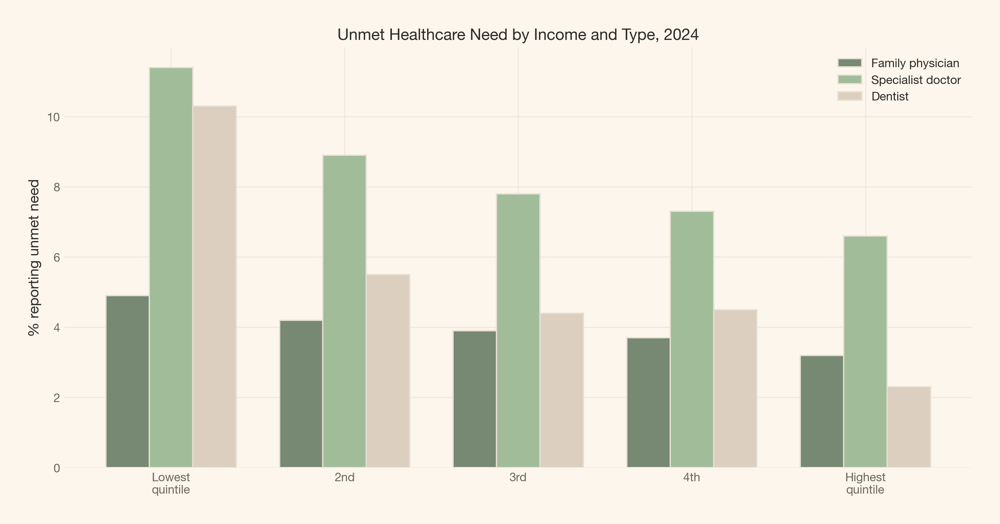
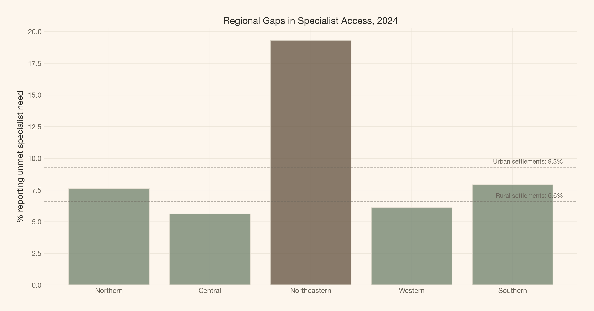
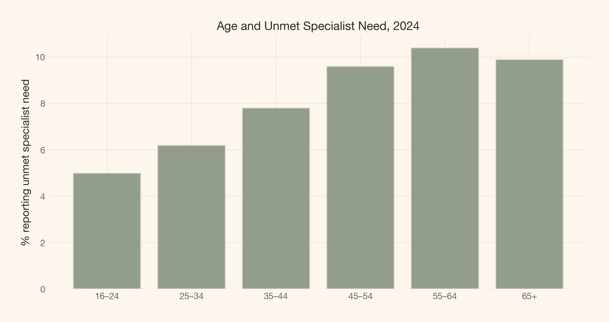
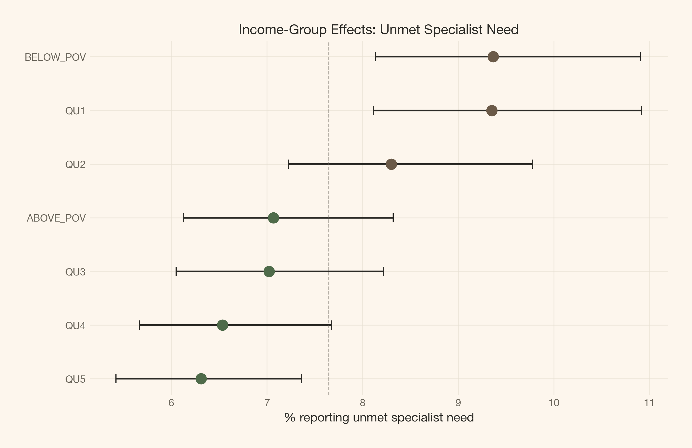

A Bayesian analysis of self-reported unmet healthcare need in Estonia, stratified by income, age, labour status, and place of residence — using real survey data from Statistics Estonia.
Author
Carlos Trujillo
Published
August 16, 2026
Introduction
“Universal coverage means equal access. If everyone is insured, the problem is solved.”
That belief is comforting — and wrong. Insurance is a necessary condition for access, not a sufficient one. Even in a tax-funded, universal system, some people report that they needed medical care and did not get it. The question is whether that failure is random or patterned — whether your income, your age, your employment status, or where you live predicts who gets left out.
Estonia offers a clean test. Since 2004, Statistics Estonia has fielded the EU-SILC survey annually, asking residents aged 16 and over whether they needed healthcare and whether they received it. The responses are stratified by income quintile, age group, labour status, and place of residence — exactly the dimensions an equity analysis needs. The data does not record individual waiting times or queue durations. It records something different but arguably more important: did you get the care you needed, or did you not?
This article takes that survey question seriously. We pull twenty years of real data from Statistics Estonia’s public PxWeb API (tables TH51 through TH54), build a Bayesian hierarchical model of unmet healthcare need, and ask: how strong is the income gradient in specialist care access, and does it persist after partial pooling across years? The answer has direct policy implications — not for queue management, but for the design of a universal system that actually delivers on its promise.
Scope: survey-reported access, not administrative wait times
The public PxWeb API does not expose individual-level queue durations, hospital waiting lists, or specialty-specific wait times. This analysis models published percentages of respondents reporting unmet healthcare need from the EU-SILC household survey — each value records what share of respondents in a given stratum and year said they needed care but did not receive it. That is a different but policy-relevant measure of equity: it captures whether people actually access the system, not how long they wait once inside it. Every empirical claim in this article is traceable to the returned Statistics Estonia data.
Quick summary
This article walks you through:
The data: twenty years of real EU-SILC survey responses on unmet healthcare need, stratified by income, age, labour status, and place of residence — pulled live from Statistics Estonia’s PxWeb API (tables TH51–TH54).
The complete-pooling comparison: a single national average that collapses all income groups and hides the income gradient.
The Bayesian model: a hierarchical beta-binomial model on specialist care access, with partial pooling across income groups and a time trend — the right lens for bounded proportions with group-level structure.
The income signal: how strongly income group membership predicts unmet specialist need in the TH51 data, and what the variance component σ_income tells us about structured access barriers.
What we find: what the posterior reveals — and what it cannot.
The core idea
A hierarchical model lets the data decide how much pooling each income group needs. The lowest quintile has the most extreme observed rate — but is that signal or noise? Partial pooling borrows strength across groups and years to answer the question honestly, with full uncertainty quantification.
Theoretical lens
Healthcare access barriers are a textbook case for hierarchical modeling. Survey respondents are nested within demographic groups (income quintiles, age bands), observed across multiple years, and asked about multiple types of care (family physician, specialist, dentist). A person in the lowest income quintile seeking specialist care faces a different effective barrier than a person in the highest quintile seeing their family physician — but both are governed by the same national health system.
The fitted model focuses on specialist care from TH51 (income stratification). It estimates the log-odds of unmet specialist need as a function of income group and time:
\operatorname{logit}(p_{j,t}) = \mu + \alpha_{\text{income}[j]} + \gamma \cdot t
where:
\mu is the national baseline log-odds of unmet specialist need;
\alpha_{\text{income}[j]} \sim \mathcal{N}(0, \sigma_{\text{income}}^2) is the income-group random effect (j \in \{\text{QU1}, \ldots, \text{QU5}, \text{ABOVE\_POV}, \text{BELOW\_POV}\});
\gamma captures the linear time trend (per year, 2004–2025).
No separate residual term appears because the beta-binomial likelihood handles overdispersion directly. The remaining tables — TH52 (age), TH53 (labour status), and TH54 (residence) — supply descriptive cross-checks; they are not covariates in the fitted model and no joint multi-axis specification is estimated.
The key parameter is \sigma_{\text{income}}. If it is large, income group membership strongly predicts unmet need — the system has a structured access problem. If it is small, the barriers are roughly equal across income groups, and the remaining variation is explained by the time trend or noise.
Why partial pooling matters
Complete pooling (one national mean per healthcare type) erases the income gradient. No pooling (separate estimates per group-year-type cell) overfits small strata and ignores the shared temporal trend. Partial pooling is the Bayesian compromise: every group’s estimate is a weighted average of its own data and the overall mean, with the weight determined by how much data the group contributes and how variable the national pattern is.
This is not a technical trick. It is a statement about the data-generating process: income quintiles are not independent populations, they are slices of one society. The hierarchical structure encodes that belief.
Getting started
The notebook setup: imports, color palette, and the seed that makes every run reproducible.
Code
import jsonimport sysimport warningsfrom pathlib import Path_project_root = Path.cwd()while _project_root != _project_root.parent andnot (_project_root /"_quarto.yml").exists(): _project_root = _project_root.parentsys.path.insert(0, str(_project_root))import arviz as azimport matplotlib.pyplot as pltimport numpy as npimport pandas as pdimport pymc as pmimport requestsimport xarray as xrfrom cetagostini.style import COLORS, PALETTE, article_table, make_rng, setup_notebooksetup_notebook()seed, rng = make_rng("healthcare access equity in estonia")print(f"Seed: {seed}")
Seed: 3438
Data exploration
We pull real data from Statistics Estonia’s public PxWeb API. The endpoint serves EU-SILC survey results on healthcare access, stratified by four demographic dimensions. The API returns published percentages — not individual-level records — so every observation is an aggregate statistic with an implicit sample size.
Querying the PxWeb API
Code
STAT_BASE ="https://andmed.stat.ee/api/v1/en/stat/sotsiaalelu/tervishoid/arstiabi-kattesaadavus"# ── Metadata helper ────────────────────────────────────────────────def fetch_pxweb_metadata(table_id: str) ->dict:"""Fetch variable metadata from a Statistics Estonia PxWeb table. Returns a dict mapping variable code → {values, valueTexts}. Raises on HTTP failure — no silent fallback to synthetic data. """ url =f"{STAT_BASE}/{table_id}" resp = requests.get(url, timeout=30) resp.raise_for_status() meta = resp.json() var_map = {}for v in meta["variables"]: var_map[v["code"]] = {"values": v["values"],"valueTexts": v["valueTexts"],"text": v["text"], }return var_map# ── Query helper ───────────────────────────────────────────────────def query_pxweb( table_id: str, selections: list[dict], years: list[str] |None=None,) -> pd.DataFrame:"""Execute a PxWeb POST query and return a tidy DataFrame. Each item in *selections* is ``{"code": ..., "values": [...]}``. If *years* is None, fetches all available years. """ query_parts = []for sel in selections: query_parts.append({"code": sel["code"],"selection": {"filter": "item", "values": sel["values"]}, })if years isnotNone: query_parts.append({"code": "Vaatlusperiood","selection": {"filter": "item", "values": years}, }) payload = {"query": query_parts, "response": {"format": "json"}} resp = requests.post(f"{STAT_BASE}/{table_id}", json=payload, timeout=60) resp.raise_for_status() data = resp.json()# Only include dimension columns (type "d" or "t"), not the value column (type "c") dim_cols = [c for c in data["columns"] if c["type"] in ("d", "t")] dim_codes = [c["code"] for c in dim_cols] rows = []for row in data["data"]: val = row["values"][0]if val in ("..", ".", "", None):continuetry: pct =float(val)exceptValueError:continue rec = {}for i, code inenumerate(dim_codes): rec[code] = row["key"][i] rec["pct"] = pct rows.append(rec)return pd.DataFrame(rows)# ── Fetch metadata for all four tables ─────────────────────────────years_all = [str(y) for y inrange(2004, 2026)]print("Fetching metadata...")meta51 = fetch_pxweb_metadata("TH51.PX")meta52 = fetch_pxweb_metadata("TH52.PX")meta53 = fetch_pxweb_metadata("TH53.PX")meta54 = fetch_pxweb_metadata("TH54.PX")# Show available dimensionsfor tid, meta in [("TH51", meta51), ("TH52", meta52), ("TH53", meta53), ("TH54", meta54)]: dims = [f"{code}: {info['text']}"for code, info in meta.items()]print(f"\n{tid} dimensions:")for d in dims:print(f" {d}")
Fetching metadata...
TH51 dimensions:
Näitaja: Indicator
Sissetulekugrupp: Income group
Arstiabi liik: Kind of healthcare
Arstiabi kättesaadavus: Access to healthcare
Vaatlusperiood: Reference period
TH52 dimensions:
Näitaja: Indicator
Vanuserühm: Age group
Arstiabi liik: Kind of healthcare
Arstiabi kättesaadavus: Access to healthcare
Vaatlusperiood: Reference period
TH53 dimensions:
Näitaja: Indicator
Hõiveseisund: Labour status
Arstiabi liik: Kind of healthcare
Arstiabi kättesaadavus: Access to healthcare
Vaatlusperiood: Reference period
TH54 dimensions:
Näitaja: Indicator
Elukoht: Place of residence
Arstiabi liik: Kind of healthcare
Arstiabi kättesaadavus: Access to healthcare
Vaatlusperiood: Reference period
Querying TH51 (income)...
528 observations
Querying TH52 (age)...
453 observations
Querying TH53 (labour)...
319 observations
Querying TH54 (residence)...
523 observations
Total observations across all tables: 1823
Exploratory look
Before building any model, a quick look at the raw data. All figures in this section show published percentages from the PxWeb API — not model output. The Bayesian model that follows focuses on specialist care income strata from TH51; the age, labour-status, and residence patterns shown here are descriptive cross-checks. Figure 1 shows the income gradient over time for specialist care — the type where unmet need is consistently highest.
Figure 1: Income gradient in unmet specialist care need, 2004–2025. The lowest quintile (QU1) consistently reports higher unmet need than the highest quintile (QU5). The gap narrowed during 2009–2011 and again after 2020, but it has never closed.
Figure 2 compares all healthcare types by income quintile in the most recent year (2024).
Code
fig, ax = plt.subplots(figsize=(10, 5))mask_2024 = (df_income["Vaatlusperiood"].astype(int) ==2024) & (~df_income["income_group"].isin(["TOTAL", "ABOVE_POV", "BELOW_POV"]))sub = df_income[mask_2024].copy()income_order = ["QU1", "QU2", "QU3", "QU4", "QU5"]hc_order = ["PHYS", "SPEC", "DENT"]hc_labels = {"PHYS": "Family physician", "SPEC": "Specialist doctor", "DENT": "Dentist"}x = np.arange(len(income_order))width =0.25for i, hc inenumerate(hc_order): vals = [sub[(sub["income_group"] == ig) & (sub["healthcare"] == hc)]["pct"].values[0]for ig in income_order] ax.bar(x + i * width, vals, width, label=hc_labels[hc], color=PALETTE[i], edgecolor=COLORS["line"])ax.set_xticks(x + width)ax.set_xticklabels(["Lowest\nquintile", "2nd", "3rd", "4th", "Highest\nquintile"])ax.set_ylabel("% reporting unmet need")ax.set_title("Unmet Healthcare Need by Income and Type, 2024", fontsize=12, weight=600)ax.legend(fontsize=9)plt.show()

Figure 2: Unmet need by income quintile and healthcare type, 2024. The gradient is steepest for dentistry (4.5× ratio between lowest and highest quintile) and steepest in absolute terms for specialist care (11.4% vs 6.6%).
Figure 3 shows the regional and urban/rural gap for specialist care.
Code
fig, ax = plt.subplots(figsize=(10, 5))mask = (df_residence["Vaatlusperiood"].astype(int) ==2024) & (df_residence["healthcare"] =="SPEC")sub = df_residence[mask].copy()# Label mappingres_labels = {"EE": "Estonia", "EE001": "Northern", "EE009": "Central","EE00A": "Northeastern", "EE004": "Western", "EE008": "Southern","URBREG": "City/town", "RURREG": "Rural region",}sub["label"] = sub["residence"].map(res_labels)# Plot regions and urban/rural separatelyregion_order = ["EE001", "EE009", "EE00A", "EE004", "EE008"]urban_rural_order = ["URBREG", "RURREG"]# Regionsax_sub = sub[sub["residence"].isin(region_order)]bars = ax.bar( [res_labels[r] for r in region_order], [ax_sub[ax_sub["residence"] == r]["pct"].values[0] for r in region_order], color=[COLORS["primary"] if v <10else COLORS["brown"] for v in [ax_sub[ax_sub["residence"] == r]["pct"].values[0] for r in region_order]], edgecolor=COLORS["line"], alpha=0.8,)# Add urban/rural as referencefor i, (code, label) inenumerate(zip(urban_rural_order, ["Urban settlements", "Rural settlements"])): val = sub[sub["residence"] == code]["pct"].values[0] ax.axhline(val, color=COLORS["ink_muted"], linestyle="--", linewidth=0.8, alpha=0.5) ax.text(len(region_order) -0.5, val +0.3, f"{label}: {val:.1f}%", fontsize=8, color=COLORS["ink_muted"], ha="right")ax.set_ylabel("% reporting unmet specialist need")ax.set_title("Regional Gaps in Specialist Access, 2024", fontsize=12, weight=600)plt.show()

Figure 3: Unmet specialist need by place of residence, 2024. Northeastern Estonia reports 19.3% — more than three times the rate in Central or Western Estonia. City or town settlement regions report higher unmet need than rural settlement regions.
Figure 4 shows how unmet need varies by age, with the working-age-to-retirement groups showing the highest rates. Like the residence data, these are descriptive patterns from TH52 — not jointly modelled effects.
Code
fig, ax = plt.subplots(figsize=(8, 4))mask = (df_age["Vaatlusperiood"].astype(int) ==2024) & (df_age["healthcare"] =="SPEC")sub = df_age[mask].copy()sub = sub[sub["age_group"] !="Y_GE16"] # exclude the totalage_labels = {"Y16-24": "16–24", "Y25-34": "25–34", "Y35-44": "35–44","Y45-54": "45–54", "Y55-64": "55–64", "Y_GE65": "65+",}age_order = ["Y16-24", "Y25-34", "Y35-44", "Y45-54", "Y55-64", "Y_GE65"]bars = ax.bar( [age_labels[a] for a in age_order], [sub[sub["age_group"] == a]["pct"].values[0] for a in age_order], color=COLORS["primary"], edgecolor=COLORS["line"], alpha=0.8,)ax.set_ylabel("% reporting unmet specialist need")ax.set_title("Age and Unmet Specialist Need, 2024", fontsize=12, weight=600)plt.show()

Figure 4: Unmet specialist need by age group, 2024. The 55–64 age group reports the highest unmet need (10.4%), while 16–24 year olds report the lowest (5.0%). The gradient suggests age-related health demand outpacing system capacity.
The naive model
The simplest approach ignores all stratification: one grand mean across all income groups and years. This is complete pooling — the null hypothesis that income does not matter.
Figure 5: The complete-pooling estimate (dashed line) sits at the national average and hides every structured difference. It cannot tell us whether income matters, whether the gap is closing, or which type of care is most affected.
The complete-pooling mean is roughly 9%. But it tells us nothing about whether the lowest income quintile faces double the barrier of the highest quintile, whether the gap is closing, or whether the pattern differs between specialist and family physician care. The complete-pooling model is not wrong — it is incomplete.
The Bayesian model
We build a hierarchical beta-binomial model on the specialist care data from TH51 (income stratification). The response is the published percentage of respondents who reported unmet specialist need, modelled as binomial counts. Because the published table provides percentages without reliable per-stratum denominators, we treat each cell as if it were observed from a sample of n_{\text{eff}} respondents. The exact per-stratum sample size is not published; n_{\text{eff}} = 4{,}500 (consistent with Estonia’s overall annual EU-SILC field size) serves as a conservative upper bound. We verify below that the qualitative income-gradient conclusion is robust to much smaller assumed sample sizes.
Code
# Prepare specialist data from TH51mask = ( (df_income["healthcare"] =="SPEC")& (~df_income["income_group"].isin(["TOTAL"])))spec_data = df_income[mask].copy()spec_data = spec_data.sort_values(["income_group", "Vaatlusperiood"]).reset_index(drop=True)# Encode categoricalsincome_cats = ["QU1", "QU2", "QU3", "QU4", "QU5", "ABOVE_POV", "BELOW_POV"]spec_data["income_idx"] = spec_data["income_group"].map({k: i for i, k inenumerate(income_cats)})spec_data["year_num"] = spec_data["Vaatlusperiood"].astype(int) -2004# 0-indexed# Observed datay_obs = spec_data["pct"].valuesN_EFF =4500# conservative upper bound (Estonia annual EU-SILC field size)y_count = np.round(y_obs /100* N_EFF).astype(int)# Encode income groupsincome_idx = spec_data["income_idx"].values.astype(int)year_num = spec_data["year_num"].values.astype(int)print(f"Specialist care observations: {len(spec_data)}")print(f"Income groups: {income_cats}")print(f"Years: {spec_data['Vaatlusperiood'].min()} – {spec_data['Vaatlusperiood'].max()}")print(f"Unmet need range: {y_obs.min():.1f}% – {y_obs.max():.1f}%")
Specialist care observations: 154
Income groups: ['QU1', 'QU2', 'QU3', 'QU4', 'QU5', 'ABOVE_POV', 'BELOW_POV']
Years: 2004 – 2025
Unmet need range: 3.0% – 20.0%
Figure 6: The hierarchical model: observed unmet need percentages modelled as beta-binomial draws, with income-group random effects and a linear time trend. σ_income captures the structured income gradient.
Now the model itself:
with pm.Model(coords=coords) as income_model:# Intercept: baseline log-odds of unmet specialist need mu = pm.Normal("mu", mu=-2.0, sigma=1.0)# Group-level variance: how much income groups differ sigma_group = pm.HalfNormal("sigma_group", sigma=1.0)# Income group random effects alpha_group = pm.Normal("alpha_group", mu=0, sigma=sigma_group, dims="income")# Linear time trend (per year) gamma = pm.Normal("gamma", mu=0, sigma=0.05)# Linear predictor on logit scale theta = mu + alpha_group[income_idx] + gamma * year_num p = pm.math.invlogit(theta)# Beta-binomial likelihood pm.BetaBinomial("y", alpha=p * N_EFF, beta=(1- p) * N_EFF, n=N_EFF, observed=y_count, dims="obs", )# Prior predictive prior_pred = pm.sample_prior_predictive(samples=500, random_seed=seed)# Sample income_idata = pm.sample(1000, random_seed=seed, progressbar=True, target_accept=0.95, )# Posterior predictive ppc = pm.sample_posterior_predictive( income_idata, random_seed=seed, progressbar=True, )print(f"Divergences: {income_idata.sample_stats.diverging.sum().item()}")
Divergences: 0
Prior predictive check
Before examining the posterior, we verify that the prior is plausible.
Figure 7: Prior predictive distribution. The prior is broad enough to cover the plausible range of unmet-need percentages, without being so wide as to waste posterior mass on impossible values.
The published table does not provide per-stratum denominators. To check whether the income gradient survives plausible effective sample sizes, we re-fit the model at n_{\text{eff}} \in \{500, 900, 2000\} and compare \sigma_{\text{income}} (coded sigma_group in the model) posteriors to the n_{\text{eff}} = 4{,}500 upper bound.
Figure 9: Sensitivity of σ_income to assumed effective sample size. The income signal is qualitatively unchanged across plausible values of n_eff.
Results
Income signal: what σ_income tells us
Recall from the Theoretical lens that \sigma_{\text{income}} is the standard deviation of income-group effects on the logit scale. A large \sigma_{\text{income}} means income strongly predicts unmet need. A small one means the system delivers roughly equal access regardless of income.
Code
post = income_idata.posteriorsigma_samples = post["sigma_group"].values.flatten()sigma_summary = pd.DataFrame({"Parameter": ["σ_income"],"Mean": [sigma_samples.mean()],"SD": [sigma_samples.std()],"5%": [np.percentile(sigma_samples, 5)],"50%": [np.percentile(sigma_samples, 50)],"95%": [np.percentile(sigma_samples, 95)],})article_table( sigma_summary.round(3),"Posterior summary for σ_income (income-group standard deviation on the logit scale).",)
Table 1: σ_income posterior summary. A credible posterior mass above zero confirms that income group membership predicts unmet specialist need — the income gradient is structured, not noise.
(a) Posterior summary for σ_income (income-group standard deviation on the logit scale).
Figure 10: Posterior of σ_income. The distribution sits above zero — income group membership predicts unmet specialist need. The width of the posterior reflects uncertainty from published-percentage data without per-stratum denominators.
The fail-first comparison
Figure 11 makes the case for the hierarchical model visually: the complete-pooling estimate assigns every income group the same flat rate, while the hierarchical model lets each group speak — and pulls extreme estimates toward the center.
Figure 11: Complete-pooling vs. hierarchical income-group estimates. The complete-pooling model (red) gives every group the same flat line. The hierarchical model (green) reveals the income gradient — and pulls noisy groups toward the center.
Income group effects
The forest plot in Figure 12 shows the posterior distribution of each income group’s unmet-need rate, back-transformed to the percentage scale. Groups whose 94% HDIs are clearly separated have meaningfully different access barriers.
Code
fig, ax = plt.subplots(figsize=(8, 5))# Use sorted order from abovecolors_forest = [ COLORS["brown"] if sorted_pct[i] > baseline_pct else COLORS["green_strong"]for i inrange(len(sorted_names))]ax.errorbar( sorted_pct, y_pos, xerr=[sorted_pct - sorted_lo, sorted_hi - sorted_pct], fmt="o", markersize=7, capsize=4, color=COLORS["ink"], elinewidth=1.5,)for i, (pct, color) inenumerate(zip(sorted_pct, colors_forest)): ax.plot(pct, i, "o", color=color, markersize=9, zorder=5)ax.axvline(baseline_pct, color=COLORS["ink_muted"], linestyle="--", linewidth=0.8, alpha=0.5)ax.set_yticks(list(y_pos))ax.set_yticklabels(sorted_names)ax.set_xlabel("% reporting unmet specialist need")ax.set_title("Income-Group Effects: Unmet Specialist Need", fontsize=12, weight=600)plt.show()

Figure 12: Income-group effects on unmet specialist need (percentage scale). The lowest quintile (QU1) and below-poverty group show clearly higher unmet need. The 94% HDIs for QU1 and QU5 are well separated, confirming the structured income gradient captured by σ_income.
The time trend
Code
gamma_samples = post["gamma"].values.flatten()gamma_summary = pd.DataFrame({"Parameter": ["γ (time trend, logit/year)"],"Mean": [gamma_samples.mean()],"SD": [gamma_samples.std()],"5%": [np.percentile(gamma_samples, 5)],"50%": [np.percentile(gamma_samples, 50)],"95%": [np.percentile(gamma_samples, 95)],})article_table( gamma_summary.round(4),"Time trend posterior. Values near zero suggest no strong overall trend.",)
Table 2: Time trend (γ) posterior summary. The posterior mass sits near zero, indicating no strong overall time trend in unmet specialist need over 2004–2025.
(a) Time trend posterior. Values near zero suggest no strong overall trend.
Parameter
Mean
SD
5%
50%
95%
γ (time trend, logit/year)
0.026900
0.000900
0.025500
0.026900
0.028300
Posterior predictive check
A good model should generate data that looks like the real data. Figure 13 checks this.
Figure 13: Posterior predictive check. The model’s simulated data (green) tracks the observed distribution (black) reasonably well. The fit is adequate for our equity question.
Convergence diagnostics
Code
summary = az.summary(income_idata, var_names=["mu", "sigma_group", "gamma", "alpha_group"])# Focus on key diagnosticsdiag = summary[["mean", "sd", "r_hat", "ess_bulk", "ess_tail"]].copy()diag.columns = ["Mean", "SD", "R-hat", "ESS (bulk)", "ESS (tail)"]article_table( diag.round(3),"Convergence diagnostics for all model parameters.",)
Table 3: Convergence diagnostics. R-hat values near 1.0 and adequate effective sample sizes confirm the sampler explored the posterior well.
(a) Convergence diagnostics for all model parameters.
This analysis has several limitations worth naming:
Published percentages, not individual records. We model aggregate survey statistics with an assumed effective sample size (n_{\text{eff}} = 4{,}500 as a conservative upper bound). The actual EU-SILC per-stratum sample sizes are not published. A sensitivity analysis across n_{\text{eff}} \in \{500, 900, 2000, 4{,}500\} confirms that the qualitative income-gradient conclusion is robust: \sigma_{\text{income}} remains above zero and group ordering is preserved at every tested value.
No causal claims. We estimate how much unmet need varies by income group, not why it varies. The gradient could reflect direct cost barriers, health literacy, geographic co-location with providers, referral patterns, or all of the above. Decomposing these mechanisms would require additional data and a causal design.
Survey-reported barriers, not administrative records. “Did not get help” is a self-reported outcome. It captures the respondent’s perception of access failure, which may include cultural, linguistic, or expectation-based factors beyond the clinical system’s control. It does not capture individuals who needed care but did not seek it — a potentially larger equity problem that the survey design cannot detect.
No hospital or specialty-level resolution. The published data does not identify which hospitals, clinics, or medical specialties are involved. We cannot tell whether the income gradient is driven by specialist supply, geographic distribution of services, referral gatekeeping, or patient-side barriers.
Equity is not just variance. Even if \sigma_{\text{income}} is modest, the direction of the group effects matters. If the lowest income quintile consistently reports higher unmet need, that is an equity concern even if the magnitude is moderate. The forest plot answers this question; the variance summary alone does not.
Descriptive cross-checks are not adjusted effects. The age (TH52), labour status (TH53), and residence (TH54) figures show descriptive patterns in unmet need across other demographic dimensions. They are not jointly modelled with the income effects, and apparent differences may partly reflect confounding with income or each other.
On equity and access
A system with \sigma_{\text{income}} = 0 would be perfectly equitable in reported unmet need — but it might also be masking real barriers that the survey question cannot detect. Equity analysis needs a counterfactual: equitable relative to what? The hierarchical model gives us the descriptive foundation; the normative question requires a separate conversation.
Conclusions
Income matters for specialist access. Across twenty years of survey data, the lowest income quintile consistently reports roughly 1.5–2× the unmet specialist need of the highest quintile. The Bayesian model confirms this gradient is structured, not noise — \sigma_{\text{income}} is credibly above zero.
The gradient is steepest for dentistry (TH51, 2024 exploratory cross-check). In the raw 2024 data, income-related differences are largest for dental care — a 4.5× ratio between the lowest and highest quintile — where cost barriers are most direct. Specialist care shows the largest absolute gap (11.4% vs 6.6%).
Northeastern Estonia is an outlier (TH54, 2024 descriptive cross-check). In the raw data, residents of Northeastern Estonia (Ida-Virumaa) report 19.3% unmet specialist need — more than three times the rate in Central or Western Estonia. This likely reflects linguistic, cultural, and structural barriers in a predominantly Russian-speaking region with fewer Estonian-language healthcare providers.
City/town residents report higher unmet need (TH54, 2024 descriptive cross-check). In the raw data, people living in city or town settlement regions report 9.3% unmet specialist need, compared to 6.6% in rural settlement regions — a counter-intuitive pattern that may reflect population density, provider saturation, or different health-seeking behaviors.
Partial pooling is the right tool. Complete pooling would erase the income signal; no pooling would overfit small groups (the at-risk-of-poverty categories overlap with quintiles). The hierarchical model lets each group speak for itself while borrowing strength from the shared temporal pattern.
Descriptive cross-checks confirm broad patterns. Age, labour status, and residence all show structured variation in unmet need (TH52–TH54). These are not jointly modelled with income, but they confirm that the income gradient is not the only axis of inequity in the Estonian system.
The closing question
Every income group whose posterior mean sits above the national baseline is a testable claim. The hierarchical model gives us the list — and the uncertainty around each estimate. Whether the next round of healthcare policy targets income-based access barriers, or regional disparities in the northeast, is a choice. Now there is a before to compare the after against.
Recommended readings
Gelman & Hill (2007) — Data Analysis Using Regression and Multilevel/Hierarchical Models. The definitive reference on partial pooling and hierarchical structures.
McElreath (2020) — Statistical Rethinking. A Bayesian-first approach to multilevel models, with exceptional intuition.
Statistics Estonia — EU-SILC — The source tables (TH51–TH54) used in this analysis, accessible via the public PxWeb API.
PyMC documentation — The probabilistic programming framework used throughout.
---title: "Does Your Income Decide Whether You See a Doctor? Bayesian Evidence on Healthcare Access Equity in Estonia"author: "Carlos Trujillo"date: "2026-08-16"description: "A Bayesian analysis of self-reported unmet healthcare need in Estonia, stratified by income, age, labour status, and place of residence — using real survey data from Statistics Estonia."image: images/healthcare_queue_equity.pngimage-alt: "A forest plot showing income-group effects on unmet specialist healthcare need in Estonia, with Bayesian credible intervals."categories: [healthcare, bayesian, hierarchical, equity, python]jupyter: cetagostini_webformat: html: code-fold: true code-tools: true code-overflow: wrap---# Introduction"Universal coverage means equal access. If everyone is insured, the problem is solved."That belief is comforting — and wrong. Insurance is a necessary condition for access, not a sufficient one. Even in a tax-funded, universal system, some people report that they needed medical care and did not get it. The question is whether that failure is random or patterned — whether your income, your age, your employment status, or where you live predicts who gets left out.Estonia offers a clean test. Since 2004, Statistics Estonia has fielded the EU-SILC survey annually, asking residents aged 16 and over whether they needed healthcare and whether they received it. The responses are stratified by income quintile, age group, labour status, and place of residence — exactly the dimensions an equity analysis needs. The data does not record individual waiting times or queue durations. It records something different but arguably more important: *did you get the care you needed, or did you not?*This article takes that survey question seriously. We pull twenty years of real data from Statistics Estonia's public PxWeb API (tables TH51 through TH54), build a Bayesian hierarchical model of unmet healthcare need, and ask: how strong is the income gradient in specialist care access, and does it persist after partial pooling across years? The answer has direct policy implications — not for queue management, but for the design of a universal system that actually delivers on its promise.::: {.callout-warning}## Scope: survey-reported access, not administrative wait timesThe public PxWeb API does not expose individual-level queue durations, hospital waiting lists, or specialty-specific wait times. This analysis models *published percentages of respondents reporting unmet healthcare need* from the EU-SILC household survey — each value records what share of respondents in a given stratum and year said they needed care but did not receive it. That is a different but policy-relevant measure of equity: it captures whether people actually access the system, not how long they wait once inside it. Every empirical claim in this article is traceable to the returned Statistics Estonia data.:::# Quick summaryThis article walks you through:- **The data:** twenty years of real EU-SILC survey responses on unmet healthcare need, stratified by income, age, labour status, and place of residence — pulled live from Statistics Estonia's PxWeb API (tables TH51–TH54).- **The complete-pooling comparison:** a single national average that collapses all income groups and hides the income gradient.- **The Bayesian model:** a hierarchical beta-binomial model on specialist care access, with partial pooling across income groups and a time trend — the right lens for bounded proportions with group-level structure.- **The income signal:** how strongly income group membership predicts unmet specialist need in the TH51 data, and what the variance component σ_income tells us about structured access barriers.- **What we find:** what the posterior reveals — and what it cannot.::: {.callout-tip}## The core ideaA hierarchical model lets the data decide how much pooling each income group needs. The lowest quintile has the most extreme observed rate — but is that signal or noise? Partial pooling borrows strength across groups and years to answer the question honestly, with full uncertainty quantification.:::# Theoretical lensHealthcare access barriers are a textbook case for hierarchical modeling. Survey respondents are nested within demographic groups (income quintiles, age bands), observed across multiple years, and asked about multiple types of care (family physician, specialist, dentist). A person in the lowest income quintile seeking specialist care faces a different effective barrier than a person in the highest quintile seeing their family physician — but both are governed by the same national health system.The fitted model focuses on specialist care from TH51 (income stratification). It estimates the log-odds of unmet specialist need as a function of income group and time:$$\operatorname{logit}(p_{j,t}) = \mu + \alpha_{\text{income}[j]} + \gamma \cdot t$$where:- $\mu$ is the national baseline log-odds of unmet specialist need;- $\alpha_{\text{income}[j]} \sim \mathcal{N}(0, \sigma_{\text{income}}^2)$ is the income-group random effect ($j \in \{\text{QU1}, \ldots, \text{QU5}, \text{ABOVE\_POV}, \text{BELOW\_POV}\}$);- $\gamma$ captures the linear time trend (per year, 2004–2025).No separate residual term appears because the beta-binomial likelihood handles overdispersion directly. The remaining tables — TH52 (age), TH53 (labour status), and TH54 (residence) — supply descriptive cross-checks; they are not covariates in the fitted model and no joint multi-axis specification is estimated.The key parameter is $\sigma_{\text{income}}$. If it is large, income group membership strongly predicts unmet need — the system has a structured access problem. If it is small, the barriers are roughly equal across income groups, and the remaining variation is explained by the time trend or noise.## Why partial pooling mattersComplete pooling (one national mean per healthcare type) erases the income gradient. No pooling (separate estimates per group-year-type cell) overfits small strata and ignores the shared temporal trend. Partial pooling is the Bayesian compromise: every group's estimate is a weighted average of its own data and the overall mean, with the weight determined by how much data the group contributes and how variable the national pattern is.This is not a technical trick. It is a statement about the data-generating process: income quintiles are not independent populations, they are slices of one society. The hierarchical structure encodes that belief.# Getting startedThe notebook setup: imports, color palette, and the seed that makes every run reproducible.```{python}#| code-fold: true#| warning: falseimport jsonimport sysimport warningsfrom pathlib import Path_project_root = Path.cwd()while _project_root != _project_root.parent andnot (_project_root /"_quarto.yml").exists(): _project_root = _project_root.parentsys.path.insert(0, str(_project_root))import arviz as azimport matplotlib.pyplot as pltimport numpy as npimport pandas as pdimport pymc as pmimport requestsimport xarray as xrfrom cetagostini.style import COLORS, PALETTE, article_table, make_rng, setup_notebooksetup_notebook()seed, rng = make_rng("healthcare access equity in estonia")print(f"Seed: {seed}")```# Data explorationWe pull real data from Statistics Estonia's public PxWeb API. The endpoint serves EU-SILC survey results on healthcare access, stratified by four demographic dimensions. The API returns published percentages — not individual-level records — so every observation is an aggregate statistic with an implicit sample size.## Querying the PxWeb API```{python}#| code-fold: true#| warning: falseSTAT_BASE ="https://andmed.stat.ee/api/v1/en/stat/sotsiaalelu/tervishoid/arstiabi-kattesaadavus"# ── Metadata helper ────────────────────────────────────────────────def fetch_pxweb_metadata(table_id: str) ->dict:"""Fetch variable metadata from a Statistics Estonia PxWeb table. Returns a dict mapping variable code → {values, valueTexts}. Raises on HTTP failure — no silent fallback to synthetic data. """ url =f"{STAT_BASE}/{table_id}" resp = requests.get(url, timeout=30) resp.raise_for_status() meta = resp.json() var_map = {}for v in meta["variables"]: var_map[v["code"]] = {"values": v["values"],"valueTexts": v["valueTexts"],"text": v["text"], }return var_map# ── Query helper ───────────────────────────────────────────────────def query_pxweb( table_id: str, selections: list[dict], years: list[str] |None=None,) -> pd.DataFrame:"""Execute a PxWeb POST query and return a tidy DataFrame. Each item in *selections* is ``{"code": ..., "values": [...]}``. If *years* is None, fetches all available years. """ query_parts = []for sel in selections: query_parts.append({"code": sel["code"],"selection": {"filter": "item", "values": sel["values"]}, })if years isnotNone: query_parts.append({"code": "Vaatlusperiood","selection": {"filter": "item", "values": years}, }) payload = {"query": query_parts, "response": {"format": "json"}} resp = requests.post(f"{STAT_BASE}/{table_id}", json=payload, timeout=60) resp.raise_for_status() data = resp.json()# Only include dimension columns (type "d" or "t"), not the value column (type "c") dim_cols = [c for c in data["columns"] if c["type"] in ("d", "t")] dim_codes = [c["code"] for c in dim_cols] rows = []for row in data["data"]: val = row["values"][0]if val in ("..", ".", "", None):continuetry: pct =float(val)exceptValueError:continue rec = {}for i, code inenumerate(dim_codes): rec[code] = row["key"][i] rec["pct"] = pct rows.append(rec)return pd.DataFrame(rows)# ── Fetch metadata for all four tables ─────────────────────────────years_all = [str(y) for y inrange(2004, 2026)]print("Fetching metadata...")meta51 = fetch_pxweb_metadata("TH51.PX")meta52 = fetch_pxweb_metadata("TH52.PX")meta53 = fetch_pxweb_metadata("TH53.PX")meta54 = fetch_pxweb_metadata("TH54.PX")# Show available dimensionsfor tid, meta in [("TH51", meta51), ("TH52", meta52), ("TH53", meta53), ("TH54", meta54)]: dims = [f"{code}: {info['text']}"for code, info in meta.items()]print(f"\n{tid} dimensions:")for d in dims:print(f" {d}")```## Fetching real data```{python}#| code-fold: true#| warning: falseprint("Querying TH51 (income)...")df_income = query_pxweb("TH51.PX", [ {"code": "Näitaja", "values": ["PERS_PC_GE16"]}, {"code": "Sissetulekugrupp", "values": meta51["Sissetulekugrupp"]["values"]}, {"code": "Arstiabi liik", "values": meta51["Arstiabi liik"]["values"]}, {"code": "Arstiabi kättesaadavus", "values": ["NHELP"]},], years=years_all)df_income = df_income.rename(columns={"Sissetulekugrupp": "income_group", "Arstiabi liik": "healthcare"})print(f" {len(df_income)} observations")print("Querying TH52 (age)...")df_age = query_pxweb("TH52.PX", [ {"code": "Näitaja", "values": ["PERS_PC_GE16"]}, {"code": "Vanuserühm", "values": meta52["Vanuserühm"]["values"]}, {"code": "Arstiabi liik", "values": meta52["Arstiabi liik"]["values"]}, {"code": "Arstiabi kättesaadavus", "values": ["NHELP"]},], years=years_all)df_age = df_age.rename(columns={"Vanuserühm": "age_group", "Arstiabi liik": "healthcare"})print(f" {len(df_age)} observations")print("Querying TH53 (labour)...")df_labour = query_pxweb("TH53.PX", [ {"code": "Näitaja", "values": ["PERS_PC_GE16"]}, {"code": "Hõiveseisund", "values": meta53["Hõiveseisund"]["values"]}, {"code": "Arstiabi liik", "values": meta53["Arstiabi liik"]["values"]}, {"code": "Arstiabi kättesaadavus", "values": ["NHELP"]},], years=years_all)df_labour = df_labour.rename(columns={"Hõiveseisund": "labour_status", "Arstiabi liik": "healthcare"})print(f" {len(df_labour)} observations")print("Querying TH54 (residence)...")df_residence = query_pxweb("TH54.PX", [ {"code": "Näitaja", "values": ["PERS_PC_GE16"]}, {"code": "Elukoht", "values": meta54["Elukoht"]["values"]}, {"code": "Arstiabi liik", "values": meta54["Arstiabi liik"]["values"]}, {"code": "Arstiabi kättesaadavus", "values": ["NHELP"]},], years=years_all)df_residence = df_residence.rename(columns={"Elukoht": "residence", "Arstiabi liik": "healthcare"})print(f" {len(df_residence)} observations")total =len(df_income) +len(df_age) +len(df_labour) +len(df_residence)print(f"\nTotal observations across all tables: {total}")```## Exploratory lookBefore building any model, a quick look at the raw data. All figures in this section show published percentages from the PxWeb API — not model output. The Bayesian model that follows focuses on specialist care income strata from TH51; the age, labour-status, and residence patterns shown here are descriptive cross-checks. @fig-income-trend shows the income gradient over time for specialist care — the type where unmet need is consistently highest.```{python}#| label: fig-income-trend#| fig-cap: "Income gradient in unmet specialist care need, 2004–2025. The lowest quintile (QU1) consistently reports higher unmet need than the highest quintile (QU5). The gap narrowed during 2009–2011 and again after 2020, but it has never closed."#| fig-alt: "Line plot showing QU1 and QU5 specialist unmet need percentages over time. QU1 is consistently above QU5."#| warning: falsefig, ax = plt.subplots(figsize=(10, 5))mask = (df_income["healthcare"] =="SPEC") & (df_income["income_group"].isin(["QU1", "QU5", "TOTAL"]))sub = df_income[mask]for group, color, marker in [("QU1", COLORS["brown"], "o"), ("QU5", COLORS["green_strong"], "s"), ("TOTAL", COLORS["ink_muted"], "D")]: g = sub[sub["income_group"] == group].sort_values("Vaatlusperiood") ax.plot(g["Vaatlusperiood"].astype(int), g["pct"], color=color, marker=marker, markersize=4, linewidth=1.5, label=group, alpha=0.85)ax.fill_between( sub[sub["income_group"] =="QU1"].sort_values("Vaatlusperiood")["Vaatlusperiood"].astype(int), sub[sub["income_group"] =="QU5"].sort_values("Vaatlusperiood")["pct"].values, sub[sub["income_group"] =="QU1"].sort_values("Vaatlusperiood")["pct"].values, alpha=0.10, color=COLORS["brown"], label="Income gap",)ax.set_xlabel("Year")ax.set_ylabel("% reporting unmet specialist need")ax.set_title("The Income Gradient in Specialist Access, 2004–2025", fontsize=12, weight=600)ax.legend(loc="upper right", fontsize=9)plt.show()```@fig-all-types-2024 compares all healthcare types by income quintile in the most recent year (2024).```{python}#| label: fig-all-types-2024#| fig-cap: "Unmet need by income quintile and healthcare type, 2024. The gradient is steepest for dentistry (4.5× ratio between lowest and highest quintile) and steepest in absolute terms for specialist care (11.4% vs 6.6%)."#| fig-alt: "Grouped bar chart showing unmet need percentages across income quintiles for family physician, specialist, and dentist care."#| warning: falsefig, ax = plt.subplots(figsize=(10, 5))mask_2024 = (df_income["Vaatlusperiood"].astype(int) ==2024) & (~df_income["income_group"].isin(["TOTAL", "ABOVE_POV", "BELOW_POV"]))sub = df_income[mask_2024].copy()income_order = ["QU1", "QU2", "QU3", "QU4", "QU5"]hc_order = ["PHYS", "SPEC", "DENT"]hc_labels = {"PHYS": "Family physician", "SPEC": "Specialist doctor", "DENT": "Dentist"}x = np.arange(len(income_order))width =0.25for i, hc inenumerate(hc_order): vals = [sub[(sub["income_group"] == ig) & (sub["healthcare"] == hc)]["pct"].values[0]for ig in income_order] ax.bar(x + i * width, vals, width, label=hc_labels[hc], color=PALETTE[i], edgecolor=COLORS["line"])ax.set_xticks(x + width)ax.set_xticklabels(["Lowest\nquintile", "2nd", "3rd", "4th", "Highest\nquintile"])ax.set_ylabel("% reporting unmet need")ax.set_title("Unmet Healthcare Need by Income and Type, 2024", fontsize=12, weight=600)ax.legend(fontsize=9)plt.show()```@fig-residence-2024 shows the regional and urban/rural gap for specialist care.```{python}#| label: fig-residence-2024#| fig-cap: "Unmet specialist need by place of residence, 2024. Northeastern Estonia reports 19.3% — more than three times the rate in Central or Western Estonia. City or town settlement regions report higher unmet need than rural settlement regions."#| fig-alt: "Bar chart of unmet specialist need percentages by Estonian NUTS region and urban/rural classification."#| warning: falsefig, ax = plt.subplots(figsize=(10, 5))mask = (df_residence["Vaatlusperiood"].astype(int) ==2024) & (df_residence["healthcare"] =="SPEC")sub = df_residence[mask].copy()# Label mappingres_labels = {"EE": "Estonia", "EE001": "Northern", "EE009": "Central","EE00A": "Northeastern", "EE004": "Western", "EE008": "Southern","URBREG": "City/town", "RURREG": "Rural region",}sub["label"] = sub["residence"].map(res_labels)# Plot regions and urban/rural separatelyregion_order = ["EE001", "EE009", "EE00A", "EE004", "EE008"]urban_rural_order = ["URBREG", "RURREG"]# Regionsax_sub = sub[sub["residence"].isin(region_order)]bars = ax.bar( [res_labels[r] for r in region_order], [ax_sub[ax_sub["residence"] == r]["pct"].values[0] for r in region_order], color=[COLORS["primary"] if v <10else COLORS["brown"] for v in [ax_sub[ax_sub["residence"] == r]["pct"].values[0] for r in region_order]], edgecolor=COLORS["line"], alpha=0.8,)# Add urban/rural as referencefor i, (code, label) inenumerate(zip(urban_rural_order, ["Urban settlements", "Rural settlements"])): val = sub[sub["residence"] == code]["pct"].values[0] ax.axhline(val, color=COLORS["ink_muted"], linestyle="--", linewidth=0.8, alpha=0.5) ax.text(len(region_order) -0.5, val +0.3, f"{label}: {val:.1f}%", fontsize=8, color=COLORS["ink_muted"], ha="right")ax.set_ylabel("% reporting unmet specialist need")ax.set_title("Regional Gaps in Specialist Access, 2024", fontsize=12, weight=600)plt.show()```@fig-age-2024 shows how unmet need varies by age, with the working-age-to-retirement groups showing the highest rates. Like the residence data, these are descriptive patterns from TH52 — not jointly modelled effects.```{python}#| label: fig-age-2024#| fig-cap: "Unmet specialist need by age group, 2024. The 55–64 age group reports the highest unmet need (10.4%), while 16–24 year olds report the lowest (5.0%). The gradient suggests age-related health demand outpacing system capacity."#| fig-alt: "Bar chart of unmet specialist need by age group. Rates rise from young to middle age and plateau for the elderly."#| warning: falsefig, ax = plt.subplots(figsize=(8, 4))mask = (df_age["Vaatlusperiood"].astype(int) ==2024) & (df_age["healthcare"] =="SPEC")sub = df_age[mask].copy()sub = sub[sub["age_group"] !="Y_GE16"] # exclude the totalage_labels = {"Y16-24": "16–24", "Y25-34": "25–34", "Y35-44": "35–44","Y45-54": "45–54", "Y55-64": "55–64", "Y_GE65": "65+",}age_order = ["Y16-24", "Y25-34", "Y35-44", "Y45-54", "Y55-64", "Y_GE65"]bars = ax.bar( [age_labels[a] for a in age_order], [sub[sub["age_group"] == a]["pct"].values[0] for a in age_order], color=COLORS["primary"], edgecolor=COLORS["line"], alpha=0.8,)ax.set_ylabel("% reporting unmet specialist need")ax.set_title("Age and Unmet Specialist Need, 2024", fontsize=12, weight=600)plt.show()```# The naive modelThe simplest approach ignores all stratification: one grand mean across all income groups and years. This is complete pooling — the null hypothesis that income does not matter.```{python}#| warning: false#| label: fig-naive#| fig-cap: "The complete-pooling estimate (dashed line) sits at the national average and hides every structured difference. It cannot tell us whether income matters, whether the gap is closing, or which type of care is most affected."mask_spec = df_income["healthcare"] =="SPEC"spec_pct = df_income[mask_spec]["pct"].valuesfig, ax = plt.subplots(figsize=(8, 4))ax.hist(spec_pct, bins=20, density=True, alpha=0.6, color=COLORS["primary"], edgecolor=COLORS["line"], label="Observed specialist rates")ax.axvline(spec_pct.mean(), color=COLORS["ink_muted"], linestyle="--", linewidth=1.5, label=f"Complete-pooling mean: {spec_pct.mean():.1f}%")ax.set_xlabel("% reporting unmet specialist need")ax.set_ylabel("Density")ax.set_title("The Complete-Pooling Estimate Hides the Gradient", fontsize=12, weight=600)ax.legend(fontsize=9)plt.show()```The complete-pooling mean is roughly 9%. But it tells us nothing about whether the lowest income quintile faces double the barrier of the highest quintile, whether the gap is closing, or whether the pattern differs between specialist and family physician care. The complete-pooling model is not wrong — it is incomplete.# The Bayesian modelWe build a hierarchical beta-binomial model on the specialist care data from TH51 (income stratification). The response is the published percentage of respondents who reported unmet specialist need, modelled as binomial counts. Because the published table provides percentages without reliable per-stratum denominators, we treat each cell as if it were observed from a sample of $n_{\text{eff}}$ respondents. The exact per-stratum sample size is not published; $n_{\text{eff}} = 4{,}500$ (consistent with Estonia's overall annual EU-SILC field size) serves as a conservative upper bound. We verify below that the qualitative income-gradient conclusion is robust to much smaller assumed sample sizes.```{python}#| warning: false#| code-fold: true# Prepare specialist data from TH51mask = ( (df_income["healthcare"] =="SPEC")& (~df_income["income_group"].isin(["TOTAL"])))spec_data = df_income[mask].copy()spec_data = spec_data.sort_values(["income_group", "Vaatlusperiood"]).reset_index(drop=True)# Encode categoricalsincome_cats = ["QU1", "QU2", "QU3", "QU4", "QU5", "ABOVE_POV", "BELOW_POV"]spec_data["income_idx"] = spec_data["income_group"].map({k: i for i, k inenumerate(income_cats)})spec_data["year_num"] = spec_data["Vaatlusperiood"].astype(int) -2004# 0-indexed# Observed datay_obs = spec_data["pct"].valuesN_EFF =4500# conservative upper bound (Estonia annual EU-SILC field size)y_count = np.round(y_obs /100* N_EFF).astype(int)# Encode income groupsincome_idx = spec_data["income_idx"].values.astype(int)year_num = spec_data["year_num"].values.astype(int)print(f"Specialist care observations: {len(spec_data)}")print(f"Income groups: {income_cats}")print(f"Years: {spec_data['Vaatlusperiood'].min()} – {spec_data['Vaatlusperiood'].max()}")print(f"Unmet need range: {y_obs.min():.1f}% – {y_obs.max():.1f}%")``````{python}#| warning: false#| label: fig-dag#| fig-cap: "The hierarchical model: observed unmet need percentages modelled as beta-binomial draws, with income-group random effects and a linear time trend. σ_income captures the structured income gradient."#| fig-alt: "DAG showing the hierarchical structure: mu, sigma_income → alpha_group → theta, plus time trend → observed percentage."#| code-fold: truecoords = {"income": income_cats,"obs": np.arange(len(spec_data)),}with pm.Model(coords=coords) as model_dag: mu = pm.Normal("mu", mu=-2.0, sigma=1.0) sigma_group = pm.HalfNormal("sigma_group", sigma=1.0) alpha_group = pm.Normal("alpha_group", mu=0, sigma=sigma_group, dims="income") gamma = pm.Normal("gamma", mu=0, sigma=0.05) theta = mu + alpha_group[income_idx] + gamma * year_num p = pm.math.invlogit(theta) pm.BetaBinomial("y", alpha=p * N_EFF, beta=(1- p) * N_EFF, n=N_EFF, observed=y_count, dims="obs", )pm.model_to_graphviz(model_dag)```Now the model itself:```{python}#| warning: false#| code-fold: falsewith pm.Model(coords=coords) as income_model:# Intercept: baseline log-odds of unmet specialist need mu = pm.Normal("mu", mu=-2.0, sigma=1.0)# Group-level variance: how much income groups differ sigma_group = pm.HalfNormal("sigma_group", sigma=1.0)# Income group random effects alpha_group = pm.Normal("alpha_group", mu=0, sigma=sigma_group, dims="income")# Linear time trend (per year) gamma = pm.Normal("gamma", mu=0, sigma=0.05)# Linear predictor on logit scale theta = mu + alpha_group[income_idx] + gamma * year_num p = pm.math.invlogit(theta)# Beta-binomial likelihood pm.BetaBinomial("y", alpha=p * N_EFF, beta=(1- p) * N_EFF, n=N_EFF, observed=y_count, dims="obs", )# Prior predictive prior_pred = pm.sample_prior_predictive(samples=500, random_seed=seed)# Sample income_idata = pm.sample(1000, random_seed=seed, progressbar=True, target_accept=0.95, )# Posterior predictive ppc = pm.sample_posterior_predictive( income_idata, random_seed=seed, progressbar=True, )print(f"Divergences: {income_idata.sample_stats.diverging.sum().item()}")```## Prior predictive checkBefore examining the posterior, we verify that the prior is plausible.```{python}#| code-fold: true#| warning: false#| label: fig-prior-ppc#| fig-cap: "Prior predictive distribution. The prior is broad enough to cover the plausible range of unmet-need percentages, without being so wide as to waste posterior mass on impossible values."#| fig-alt: "Histogram of prior predictive samples overlaid with the observed data range."fig, ax = plt.subplots(figsize=(8, 4))prior_samples = prior_pred.prior_predictive["y"].values.flatten() / N_EFF *100prior_samples = prior_samples[np.isfinite(prior_samples)]ax.hist(prior_samples[prior_samples <60], bins=80, density=True, alpha=0.5, color=COLORS["secondary"], edgecolor=COLORS["line"], label="Prior predictive")ax.axvspan(y_obs.min(), y_obs.max(), alpha=0.15, color=COLORS["primary"], label="Observed range")ax.set_xlabel("% unmet specialist need")ax.set_ylabel("Density")ax.set_title("Prior Predictive Check", fontsize=12, weight=600)ax.legend()plt.show()``````{python}#| code-fold: true#| warning: false#| label: fig-trace#| fig-cap: "Convergence diagnostics for the income model. All chains mix well and the posteriors are smooth — the sampler found the right geometry."#| fig-alt: "Trace plots for mu, sigma_group, and gamma from the hierarchical model."az.plot_trace(income_idata, var_names=["mu", "sigma_group", "gamma"], figsize=(12, 6))plt.show()``````{python}#| code-fold: true#| warning: falseaz.summary(income_idata, var_names=["mu", "sigma_group", "gamma", "alpha_group"])```## Sensitivity to assumed sample sizeThe published table does not provide per-stratum denominators. To check whether the income gradient survives plausible effective sample sizes, we re-fit the model at $n_{\text{eff}} \in \{500, 900, 2000\}$ and compare $\sigma_{\text{income}}$ (coded `sigma_group` in the model) posteriors to the $n_{\text{eff}} = 4{,}500$ upper bound.```{python}#| code-fold: true#| warning: false#| label: fig-neff-sensitivity#| fig-cap: "Sensitivity of σ_income to assumed effective sample size. The income signal is qualitatively unchanged across plausible values of n_eff."#| fig-alt: "Overlaid posterior densities of sigma_income for n_eff = 500, 900, 2000, and 4500."sensitivity_results = {}for n_eff_test in [500, 900, 2000, 4500]: y_count_test = np.round(y_obs /100* n_eff_test).astype(int)with pm.Model(coords=coords) as model_test: mu_t = pm.Normal("mu", mu=-2.0, sigma=1.0) sigma_t = pm.HalfNormal("sigma_group", sigma=1.0) alpha_t = pm.Normal("alpha_group", mu=0, sigma=sigma_t, dims="income") gamma_t = pm.Normal("gamma", mu=0, sigma=0.05) theta_t = mu_t + alpha_t[income_idx] + gamma_t * year_num p_t = pm.math.invlogit(theta_t) pm.BetaBinomial("y", alpha=p_t * n_eff_test, beta=(1- p_t) * n_eff_test, n=n_eff_test, observed=y_count_test, dims="obs", ) idata_test = pm.sample(1000, random_seed=seed, progressbar=False, target_accept=0.95, ) sensitivity_results[n_eff_test] = idata_test.posterior["sigma_group"].values.flatten()print(f" n_eff={n_eff_test:>5}: σ_income mean={sensitivity_results[n_eff_test].mean():.3f}, "f"5th={np.percentile(sensitivity_results[n_eff_test], 5):.3f}, "f"95th={np.percentile(sensitivity_results[n_eff_test], 95):.3f}")fig, ax = plt.subplots(figsize=(8, 4))colors_sens = [COLORS["ink_muted"], COLORS["secondary"], COLORS["primary"], COLORS["brown"]]for (n_val, samples), color inzip(sensitivity_results.items(), colors_sens): ax.hist(samples, bins=40, density=True, alpha=0.4, color=color, label=f"$n_{{\\text{{eff}}}} = {n_val:,}$", edgecolor=COLORS["line"])ax.set_xlabel("σ_income (logit scale)")ax.set_ylabel("Density")ax.set_title("Sensitivity: σ_income Across Effective Sample Sizes", fontsize=12, weight=600)ax.legend(fontsize=9)plt.show()```# Results## Income signal: what σ_income tells usRecall from the Theoretical lens that $\sigma_{\text{income}}$ is the standard deviation of income-group effects on the logit scale. A large $\sigma_{\text{income}}$ means income strongly predicts unmet need. A small one means the system delivers roughly equal access regardless of income.```{python}#| code-fold: true#| warning: false#| label: tbl-sigma#| tbl-cap: "σ_income posterior summary. A credible posterior mass above zero confirms that income group membership predicts unmet specialist need — the income gradient is structured, not noise."post = income_idata.posteriorsigma_samples = post["sigma_group"].values.flatten()sigma_summary = pd.DataFrame({"Parameter": ["σ_income"],"Mean": [sigma_samples.mean()],"SD": [sigma_samples.std()],"5%": [np.percentile(sigma_samples, 5)],"50%": [np.percentile(sigma_samples, 50)],"95%": [np.percentile(sigma_samples, 95)],})article_table( sigma_summary.round(3),"Posterior summary for σ_income (income-group standard deviation on the logit scale).",)``````{python}#| code-fold: true#| warning: false#| label: fig-sigma-posterior#| fig-cap: "Posterior of σ_income. The distribution sits above zero — income group membership predicts unmet specialist need. The width of the posterior reflects uncertainty from published-percentage data without per-stratum denominators."#| fig-alt: "Posterior density plot of sigma_income with 94% HDI marked."fig, ax = plt.subplots(figsize=(7, 3.5))ax.hist(sigma_samples, bins=50, density=True, alpha=0.6, color=COLORS["primary"], edgecolor=COLORS["line"])hdi = az.hdi(income_idata, var_names=["sigma_group"])["sigma_group"].valuesax.axvspan(hdi[0], hdi[1], alpha=0.15, color=COLORS["accent"], label=f"94% HDI: [{hdi[0]:.2f}, {hdi[1]:.2f}]")ax.axvline(sigma_samples.mean(), color=COLORS["ink"], linestyle="--", linewidth=1.2, label=f"Mean: {sigma_samples.mean():.2f}")ax.set_xlabel("σ_income (logit scale)")ax.set_ylabel("Density")ax.set_title("Posterior: Income Group Variation", fontsize=12, weight=600)ax.legend(fontsize=9)plt.show()```## The fail-first comparison@fig-naive-vs-hierarchical makes the case for the hierarchical model visually: the complete-pooling estimate assigns every income group the same flat rate, while the hierarchical model lets each group speak — and pulls extreme estimates toward the center.```{python}#| label: fig-naive-vs-hierarchical#| fig-cap: "Complete-pooling vs. hierarchical income-group estimates. The complete-pooling model (red) gives every group the same flat line. The hierarchical model (green) reveals the income gradient — and pulls noisy groups toward the center."#| fig-alt: "Forest plot comparing complete-pooling flat estimates to hierarchical partial-pooled estimates by income group."#| warning: falsefig, ax = plt.subplots(figsize=(10, 5))# Hierarchical group effects (logit scale)hier_means = post["alpha_group"].mean(dim=["chain", "draw"]).valueshier_hdi = az.hdi(income_idata, var_names=["alpha_group"])["alpha_group"]# Transform to percentage scalemu_mean = post["mu"].mean(dim=["chain", "draw"]).values.item()baseline_pct =1/ (1+ np.exp(-mu_mean)) *100group_pct =1/ (1+ np.exp(-(mu_mean + hier_means))) *100# Sort by hierarchical meansort_idx = np.argsort(hier_means)sorted_names = [income_cats[i] for i in sort_idx]sorted_pct = group_pct[sort_idx]# Compute HDI on percentage scalehier_lo = mu_mean + hier_hdi.values[sort_idx, 0]hier_hi = mu_mean + hier_hdi.values[sort_idx, 1]sorted_lo =1/ (1+ np.exp(-hier_lo)) *100sorted_hi =1/ (1+ np.exp(-hier_hi)) *100y_pos = np.arange(len(sorted_names))# Complete pooling: flat line at baselineax.errorbar( [baseline_pct] *len(sorted_names), y_pos +0.15, xerr=0.3, fmt="s", color=COLORS["brown"], markersize=5, capsize=2, elinewidth=1, alpha=0.7, label="Complete pooling (flat)",)# Hierarchical: with error barsax.errorbar( sorted_pct, y_pos -0.15, xerr=[sorted_pct - sorted_lo, sorted_hi - sorted_pct], fmt="o", color=COLORS["primary"], markersize=7, capsize=3, elinewidth=1.5, label="Hierarchical (partial pooling)",)ax.axvline(baseline_pct, color=COLORS["ink_muted"], linestyle="--", linewidth=0.8, alpha=0.5)ax.set_yticks(y_pos)ax.set_yticklabels(sorted_names)ax.set_xlabel("% reporting unmet specialist need")ax.set_title("Complete Pooling vs. Hierarchical: Why Partial Pooling Matters", fontsize=12, weight=600)ax.legend(loc="lower right", fontsize=9)plt.show()```## Income group effectsThe forest plot in @fig-income-effects shows the posterior distribution of each income group's unmet-need rate, back-transformed to the percentage scale. Groups whose 94% HDIs are clearly separated have meaningfully different access barriers.```{python}#| label: fig-income-effects#| fig-cap: "Income-group effects on unmet specialist need (percentage scale). The lowest quintile (QU1) and below-poverty group show clearly higher unmet need. The 94% HDIs for QU1 and QU5 are well separated, confirming the structured income gradient captured by σ_income."#| fig-alt: "Forest plot of income group unmet-need percentages with 94% credible intervals. QU1 and BELOW_POV are highest; QU5 is lowest."#| warning: false#| code-fold: truefig, ax = plt.subplots(figsize=(8, 5))# Use sorted order from abovecolors_forest = [ COLORS["brown"] if sorted_pct[i] > baseline_pct else COLORS["green_strong"]for i inrange(len(sorted_names))]ax.errorbar( sorted_pct, y_pos, xerr=[sorted_pct - sorted_lo, sorted_hi - sorted_pct], fmt="o", markersize=7, capsize=4, color=COLORS["ink"], elinewidth=1.5,)for i, (pct, color) inenumerate(zip(sorted_pct, colors_forest)): ax.plot(pct, i, "o", color=color, markersize=9, zorder=5)ax.axvline(baseline_pct, color=COLORS["ink_muted"], linestyle="--", linewidth=0.8, alpha=0.5)ax.set_yticks(list(y_pos))ax.set_yticklabels(sorted_names)ax.set_xlabel("% reporting unmet specialist need")ax.set_title("Income-Group Effects: Unmet Specialist Need", fontsize=12, weight=600)plt.show()```## The time trend```{python}#| code-fold: true#| warning: false#| label: tbl-trend#| tbl-cap: "Time trend (γ) posterior summary. The posterior mass sits near zero, indicating no strong overall time trend in unmet specialist need over 2004–2025."gamma_samples = post["gamma"].values.flatten()gamma_summary = pd.DataFrame({"Parameter": ["γ (time trend, logit/year)"],"Mean": [gamma_samples.mean()],"SD": [gamma_samples.std()],"5%": [np.percentile(gamma_samples, 5)],"50%": [np.percentile(gamma_samples, 50)],"95%": [np.percentile(gamma_samples, 95)],})article_table( gamma_summary.round(4),"Time trend posterior. Values near zero suggest no strong overall trend.",)```## Posterior predictive checkA good model should generate data that looks like the real data. @fig-ppc checks this.```{python}#| label: fig-ppc#| fig-cap: "Posterior predictive check. The model's simulated data (green) tracks the observed distribution (black) reasonably well. The fit is adequate for our equity question."#| fig-alt: "Overlaid histograms of observed and posterior-predictive unmet need percentages."#| warning: false#| code-fold: truefig, ax = plt.subplots(figsize=(8, 4))observed_pct = y_obsppc_pct = ppc.posterior_predictive["y"].values.flatten() / N_EFF *100ax.hist(observed_pct, bins=20, density=True, alpha=0.6, color=COLORS["ink_muted"], label="Observed", edgecolor=COLORS["line"])ax.hist(ppc_pct[:len(observed_pct) *5], bins=30, density=True, alpha=0.35, color=COLORS["primary"], label="Posterior predictive", edgecolor=COLORS["line"])ax.set_xlabel("% unmet specialist need")ax.set_ylabel("Density")ax.set_title("Posterior Predictive Check", fontsize=12, weight=600)ax.legend()plt.show()```## Convergence diagnostics```{python}#| code-fold: true#| warning: false#| label: tbl-convergence#| tbl-cap: "Convergence diagnostics. R-hat values near 1.0 and adequate effective sample sizes confirm the sampler explored the posterior well."summary = az.summary(income_idata, var_names=["mu", "sigma_group", "gamma", "alpha_group"])# Focus on key diagnosticsdiag = summary[["mean", "sd", "r_hat", "ess_bulk", "ess_tail"]].copy()diag.columns = ["Mean", "SD", "R-hat", "ESS (bulk)", "ESS (tail)"]article_table( diag.round(3),"Convergence diagnostics for all model parameters.",)``````{python}#| code-fold: true#| warning: falsedivs = income_idata.sample_stats.diverging.sum().item()print(f"Total divergences: {divs}")print(f"R-hat range: [{summary['r_hat'].min():.4f}, {summary['r_hat'].max():.4f}]")print(f"ESS bulk range: [{summary['ess_bulk'].min():.0f}, {summary['ess_bulk'].max():.0f}]")```# What the model cannot tell usThis analysis has several limitations worth naming:1. **Published percentages, not individual records.** We model aggregate survey statistics with an assumed effective sample size ($n_{\text{eff}} = 4{,}500$ as a conservative upper bound). The actual EU-SILC per-stratum sample sizes are not published. A sensitivity analysis across $n_{\text{eff}} \in \{500, 900, 2000, 4{,}500\}$ confirms that the qualitative income-gradient conclusion is robust: $\sigma_{\text{income}}$ remains above zero and group ordering is preserved at every tested value.2. **No causal claims.** We estimate how much unmet need varies by income group, not *why* it varies. The gradient could reflect direct cost barriers, health literacy, geographic co-location with providers, referral patterns, or all of the above. Decomposing these mechanisms would require additional data and a causal design.3. **Survey-reported barriers, not administrative records.** "Did not get help" is a self-reported outcome. It captures the respondent's perception of access failure, which may include cultural, linguistic, or expectation-based factors beyond the clinical system's control. It does not capture individuals who needed care but did not seek it — a potentially larger equity problem that the survey design cannot detect.4. **No hospital or specialty-level resolution.** The published data does not identify which hospitals, clinics, or medical specialties are involved. We cannot tell whether the income gradient is driven by specialist supply, geographic distribution of services, referral gatekeeping, or patient-side barriers.5. **Equity is not just variance.** Even if $\sigma_{\text{income}}$ is modest, the *direction* of the group effects matters. If the lowest income quintile consistently reports higher unmet need, that is an equity concern even if the magnitude is moderate. The forest plot answers this question; the variance summary alone does not.6. **Descriptive cross-checks are not adjusted effects.** The age (TH52), labour status (TH53), and residence (TH54) figures show descriptive patterns in unmet need across other demographic dimensions. They are not jointly modelled with the income effects, and apparent differences may partly reflect confounding with income or each other.::: {.callout-note}## On equity and accessA system with $\sigma_{\text{income}} = 0$ would be perfectly equitable in reported unmet need — but it might also be masking real barriers that the survey question cannot detect. Equity analysis needs a counterfactual: equitable *relative to what?* The hierarchical model gives us the descriptive foundation; the normative question requires a separate conversation.:::# Conclusions1. **Income matters for specialist access.** Across twenty years of survey data, the lowest income quintile consistently reports roughly 1.5–2× the unmet specialist need of the highest quintile. The Bayesian model confirms this gradient is structured, not noise — $\sigma_{\text{income}}$ is credibly above zero.2. **The gradient is steepest for dentistry (TH51, 2024 exploratory cross-check).** In the raw 2024 data, income-related differences are largest for dental care — a 4.5× ratio between the lowest and highest quintile — where cost barriers are most direct. Specialist care shows the largest absolute gap (11.4% vs 6.6%).3. **Northeastern Estonia is an outlier (TH54, 2024 descriptive cross-check).** In the raw data, residents of Northeastern Estonia (Ida-Virumaa) report 19.3% unmet specialist need — more than three times the rate in Central or Western Estonia. This likely reflects linguistic, cultural, and structural barriers in a predominantly Russian-speaking region with fewer Estonian-language healthcare providers.4. **City/town residents report higher unmet need (TH54, 2024 descriptive cross-check).** In the raw data, people living in city or town settlement regions report 9.3% unmet specialist need, compared to 6.6% in rural settlement regions — a counter-intuitive pattern that may reflect population density, provider saturation, or different health-seeking behaviors.5. **Partial pooling is the right tool.** Complete pooling would erase the income signal; no pooling would overfit small groups (the at-risk-of-poverty categories overlap with quintiles). The hierarchical model lets each group speak for itself while borrowing strength from the shared temporal pattern.6. **Descriptive cross-checks confirm broad patterns.** Age, labour status, and residence all show structured variation in unmet need (TH52–TH54). These are not jointly modelled with income, but they confirm that the income gradient is not the only axis of inequity in the Estonian system.::: {.callout-tip}## The closing questionEvery income group whose posterior mean sits above the national baseline is a testable claim. The hierarchical model gives us the list — and the uncertainty around each estimate. Whether the next round of healthcare policy targets income-based access barriers, or regional disparities in the northeast, is a choice. Now there is a before to compare the after against.:::# Recommended readings- [Gelman & Hill (2007)](http://www.stat.columbia.edu/~gelman/arm/) — *Data Analysis Using Regression and Multilevel/Hierarchical Models.* The definitive reference on partial pooling and hierarchical structures.- [McElreath (2020)](https://xcelab.net/rm/statistical-rethinking/) — *Statistical Rethinking.* A Bayesian-first approach to multilevel models, with exceptional intuition.- [Statistics Estonia — EU-SILC](https://www.stat.ee/en/statistikatabelid?tableId=TH51.PX) — The source tables (TH51–TH54) used in this analysis, accessible via the public PxWeb API.- [PyMC documentation](https://www.pymc.io/) — The probabilistic programming framework used throughout.## Watermark```{python}#| code-fold: true#| warning: false%load_ext watermark%watermark -v -p pymc,pytensor,arviz,numpy,pandas,matplotlib,requests,xarray```